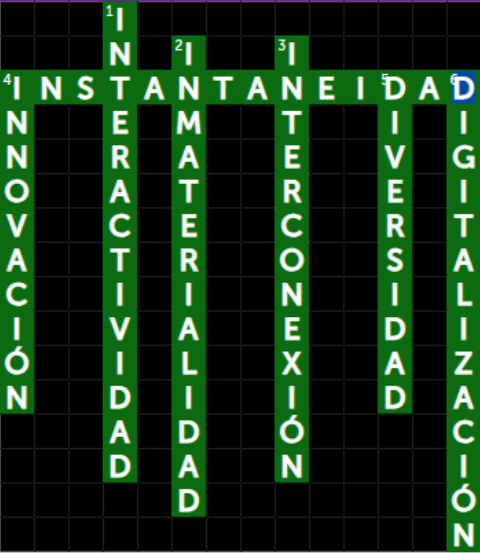

Actividad 1.1.2: Crucigrama sobre las características de las TIC
Instrucciones
En el crucigrama hacer clic sobre la pregunta horizontal o vertical y se aparecerá coloreada en la pregunta y en el crucigrama, escribir la respuesta con base en el contenido visto.
A continuación se muestra un ejemplo.

Puede repetir la actividad las veces que considere necesario realizar, el crucigrama cambia cada que se ingresa para ser contestado.
Es importante que sepas que esta actividad no tiene calificación, su propósito es reforzar tus conocimientos relacionados con este tema y que puedas evaluar aprendizajes adquiridos.
Para ingresar a la actividad hacer clic en el siguiente enlace